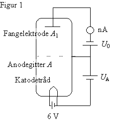
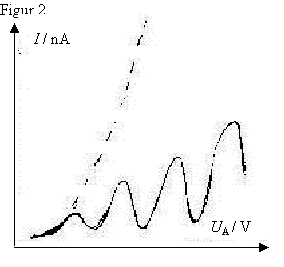
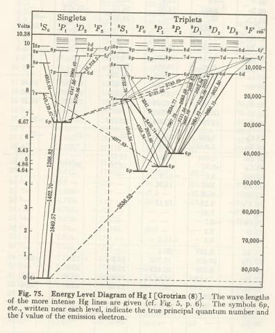
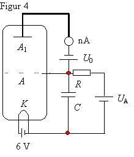
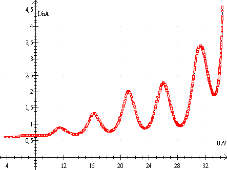

Det er øvelsens formål direkte at eftervise eksistensen af energiniveauer i atomet.
Der benyttes en triode med en enatomig gas (Hg-damp) ved et tryk af størrelsesordenen 0,1 torr.

Elektronerne fra glødetråden K accelereres af potentialforskellen UA mellem K og en gitterformet anode A. Afstanden fra K til A er adskillige gange større end elektronernes middelvejlængde. Efter passagen af gitteret (anoden) løber elektronerne op mod en potentialforskel U0 mellem A og en fangelektrode A1, også kaldet en modelektrode. Kun de elektroner, der ankommer til gitteret med kinetisk energi større end e·U0, bidrager til strømmen gennem røret og dermed til strømstyrken, I, som måles med et følsomt amperemeter. Afstanden fra A til A1 er lille i forhold til elektronernes frie middelvejlængde i Hg-dampen, hvorfor de kun sjældent støder sammen med Hg-atomerne på denne strækning. Det viser sig, at hvis UA ikke er alt for stor, så ankommer hovedparten af elektronerne til gitteret med samme hastighed, som hvis røret havde været lufttomt, selv om elektronerne på strækningen fra K til A må være stødt sammen med Hg-atomer. Disse sammenstød må have været »elastiske«. Da et Hg-atom er mange gange tungere end en elektron, mister elektronen ikke energi ved sammenstødet.
Hvis røret havde været lufttomt, ville man forvente en (UA-I) graf som vist stiplet på figur 2. Men når røret indeholder Hg-damp, kommer grafen til at se ud som den fuldt optrukne kurve. Det første fald i strømmen forklares på følgende måde: Når en elektron har tilstrækkelig energi til at anslå et Hg-atom fra grundtilstanden til 1. exciterede tilstand, vil den hermed miste så meget energi, at den ikke kan overvinde modspændingen og nå hen til fangelektroden. Strømstyrken begynder derfor at aftage, når elektronerne har tilstrækkelig energi til at anslå et Hg-atom. Det næste fald i strømstyrken sker, når elektronerne får energi nok til at anslå 2 Hg-atomer osv. Forskellen i energi mellem grundtilstanden og 1. exciterede tilstand er for Hg 4,89 eV. Derfor sker der et fald i strømstyrken hver gang accelerationsspændingen stiger med 4,89 V. Afstanden mellem to nabotoppe er altså 4,89 V. Når de exciterede Hg-atomer spontant falder tilbage til grundtilstanden udsendes fotoner. Disse er i det ultraviolette område og kan derfor ikke ses. De kan dog registreres i Hg spektret med en ultravioletfølsom detektor og derved kan ovenstående fortolkning af Franck-Hertz forsøget bekræftes - eller hvis vi vil kan vi sige, at Franck-Hertz forsøget bekræfter Bohrs teori for fotonemission.

Opgave: Udregn frekvens og bølgelængde for de udsendte fotoner. Identificer overgangen på diagrammet til højre.

Apparatet består af et særligt udformet rør med Hg-damp. Røret er anbragt i en termostatstyret varmeovn. Temperaturen måles. Den bør være ca. 180°C . Da strømstyrken I er af størrelsesorden 10-9 A, er fangelektroden højisoleret fra det øvrige rør med et specielt keramisk materiale. Der benyttes korte ledninger til forbindelsen til amperemeteret. Glødetråden tilsluttes 6 V vekselspænding. Accelerationsspændingen tilsluttes via et RC-led (f.eks. R = 1 MW og C = 50m F). Man opnår herved en forsinkelse som gør, at metrene kan følge med og hurtige spændingsændringer udglattes.Straks ved forsøgets begyndelse tændes for varmeovnen. Apparaterne stilles op som vist på figur 4. Bemærk, at elementet på 1,5 V er koblet modsat accelerationsspændingen. Med et voltmeter med autorange måles accelerationsspændingen fra K til A, som er lig med spændingen over kondensatoren. Strømstyrken måles ved at tilslutte et voltmeter til amperemetrets analoge udgang.
I Datalyse vælges måling på 2 apparater. Sæt tid pr måling til 0,5 sekund og antallet af målinger til 1000. Start måling og skru op for spændingen. Stop måling når/hvis der fås OL på amperemetret.
Udregn strømstyrken i tabellen og gem tabellen.
Tegn (UA, I)-graf.
Bestem alle maksima ved at klikke på max-knappen i panelet til venstre. Tegn en ny graf, hvor de målte spændinger afbildes som funktion af deres numre.
Bestem ionisationsenergien vha. denne graf.
Gentag forsøget indtil der forhåbentlig er opnået et pænt resultat.
